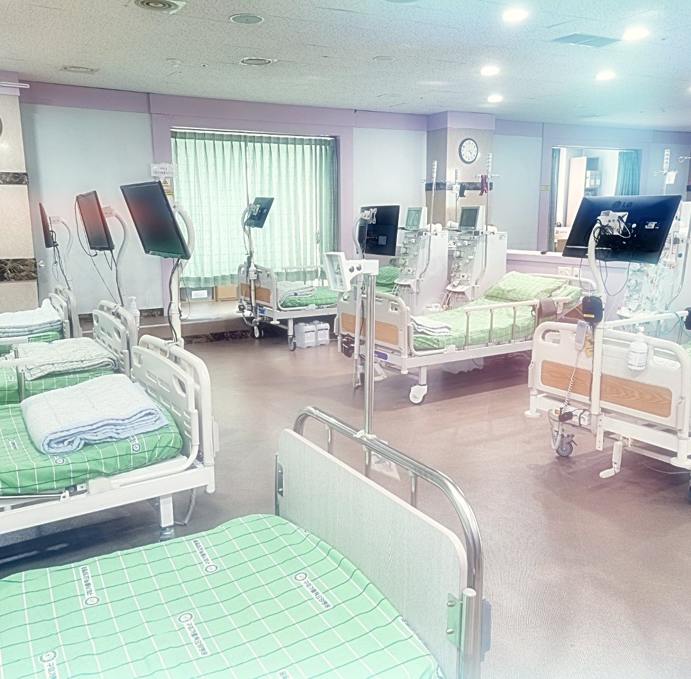
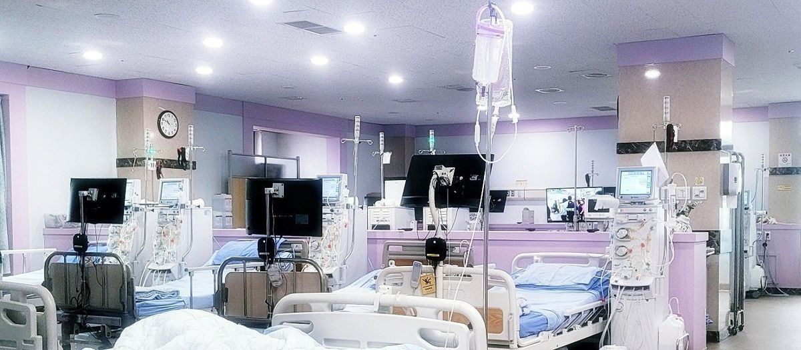
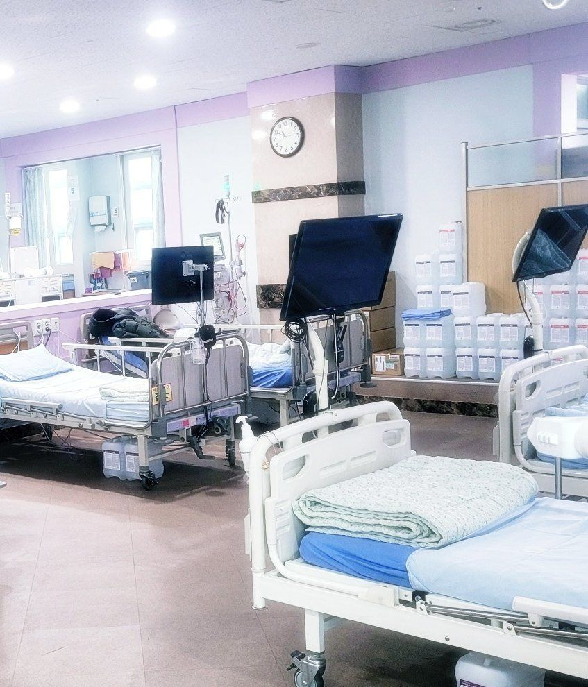
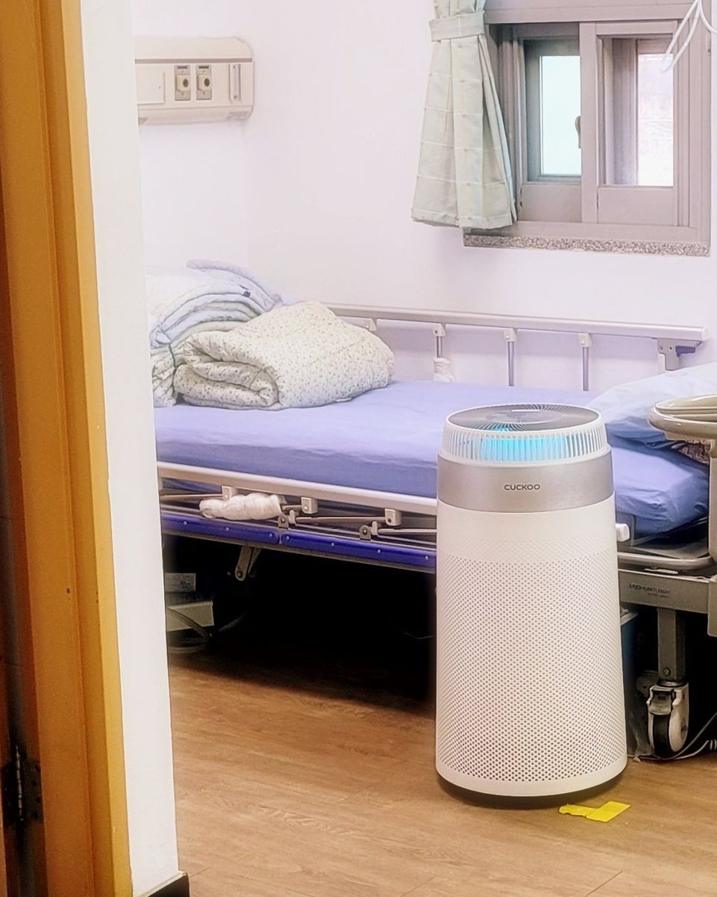
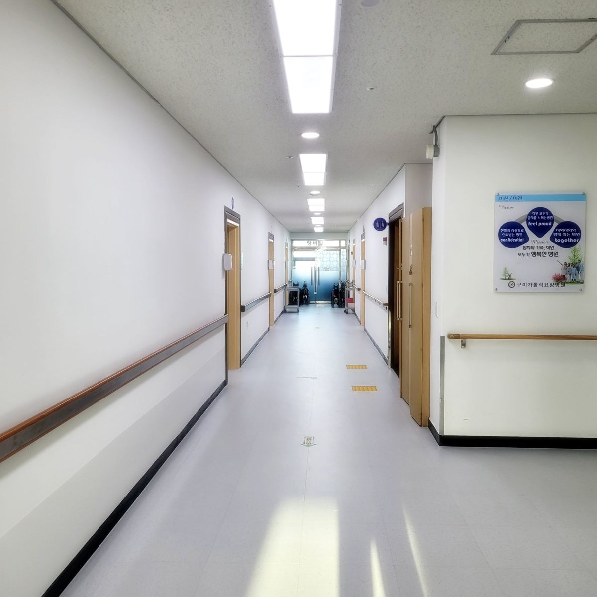
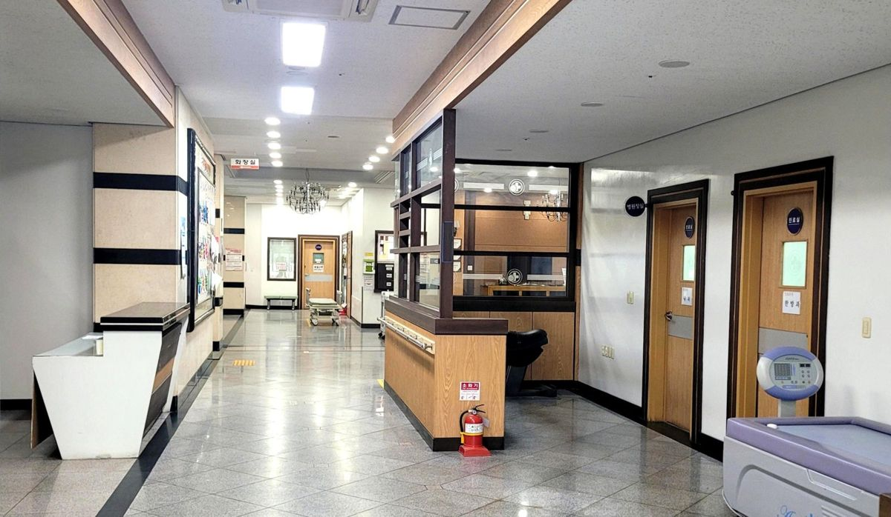
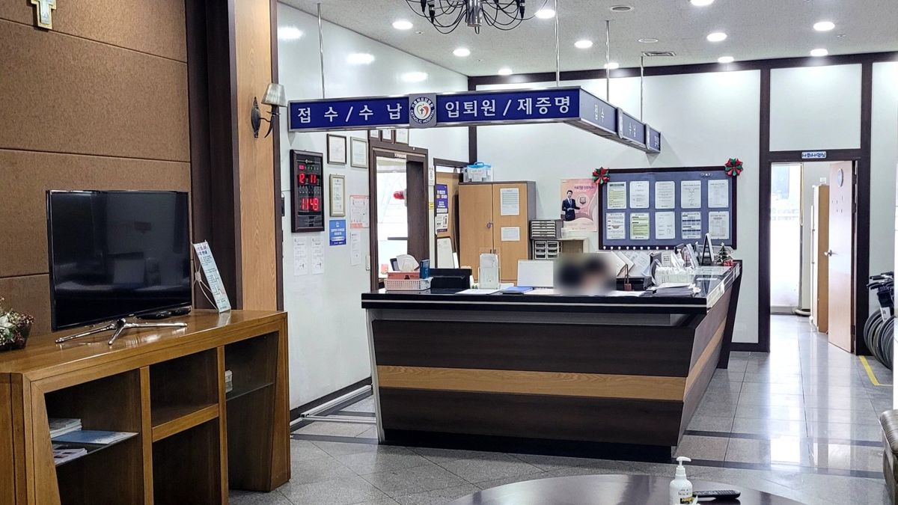
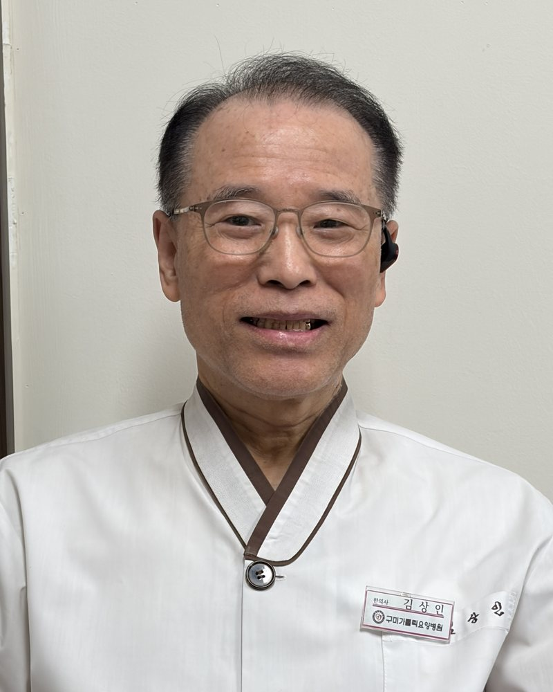

현재 치료 상황부터
다른 병원에서 투석을 받고 계셔도 입원을 상담하실 수 있습니다. 현재 치료 상황을 말씀해 주시면 필요한 확인 절차를 안내합니다.
365일 24시간 상담 신청신청하시면 24시간 안에 연락드립니다

내과 전문의
· 한의사 진료
10년 이상
투석 중심 요양병원 운영 경험
병원 내
인공신장실
의료기관평가인증원 인증 요양병원인증기간 2023. 9. 10. – 2027. 9. 9.
병원 둘러보기
인공신장실과 병실, 복도와 1층 원무과의 실제 모습입니다.






의료진·약사 소개
구미가톨릭요양병원의 병원장, 부원장, 과장입니다.

투석 진료
다른 병원에서 투석을 받고 계셔도 입원을 상담하실 수 있습니다. 현재 치료 상황을 말씀해 주시면 필요한 확인 절차를 안내합니다.
환자에게 필요한 이동 도움과 간병, 병실 생활에 대해 상담하세요. 실제 제공 가능한 범위를 확인해 입원을 결정합니다.
희망하시는 입원 시기와 기존 투석 일정을 알려 주세요. 환자 상태와 병원 상황을 확인한 뒤 가능한 일정을 안내합니다.
입원 안내
무엇부터 준비할지 막막하다면 전화로 먼저 문의해 주세요. 토·일요일에도 입원합니다.
투석 여부와 희망 입원 시기를 말씀해 주세요.
병원에서 확인할 내용과 필요한 자료를 안내합니다.
의료진의 판단과 투석 일정·병상 상황을 확인합니다.
입원이 결정되면 일정과 준비 사항을 확인합니다.
비용 안내
비용은 환자의 적용 조건과 입원 계획에 따라 달라집니다. 상담 시 아래 항목을 나누어 확인해 주세요.
진료협력병원
환자 상태에 따라 협력병원으로 진료 의뢰와 전원을 연계합니다.
자주 묻는 질문
네. 현재 치료 상황을 알려 주시면 병원에서 필요한 자료와 확인 절차를 안내합니다. 입원 가능 여부는 개별 상태와 병원 상황을 확인한 뒤 결정합니다.
환자 상태와 투석 일정, 병상 상황을 확인해야 합니다. 희망 입원 시기를 전화로 알려 주세요.
네. 토·일요일에도 입원합니다. 주말에는 원클릭 상담을 신청해 주시면 주말에도 연락드립니다. 입원 가능 여부와 일정은 환자 상태와 병상 상황을 확인한 뒤 안내합니다.
투석 외의 입원 상담도 가능합니다. 환자의 현재 치료 상황과 필요한 돌봄을 알려 주시면 병원에서 확인해 안내합니다.
현재 치료 상황과 희망 입원 시기를 먼저 알려 주세요. 필요한 진료 자료와 제출 방법은 병원 안내에 따라 준비하시면 됩니다.
상담·오시는 길
경상북도 구미시 야은로 483 (도량동)
네이버 지도에서 위치 보기 ↗병원 층별 안내판 기준(2026년 1월 요양원 블로그 게시).
전화 상담 · 평일 오전 9시 – 오후 6시
주말에는 원클릭 상담을 신청해 주시면 주말에도 연락드립니다
환자 상태와 필요한 돌봄을 확인해 안내합니다.
병원 소식 보기 ↗요양원 입소와 재가 서비스는 병원 입원과 구분하여 상담합니다.
함께 생활하는 돌봄
집으로 찾아가는 돌봄